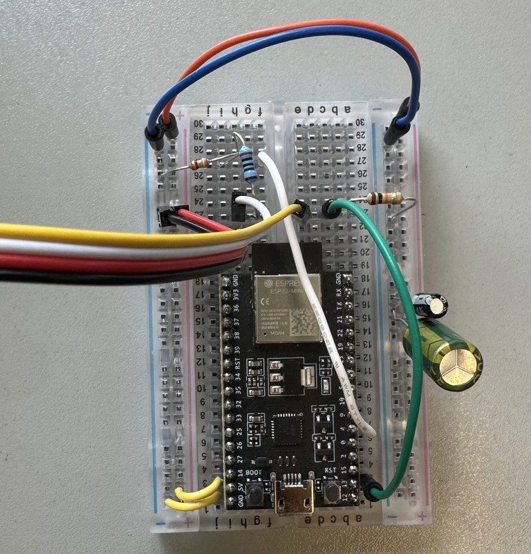

Project · IDEAS Clinic × Toyota · Delivered
Toyota Challenge — Autonomous Fleets
One robot doing a job is a controls problem. Several robots sharing a floor without hitting each other is a systems problem — this challenge is the second one.

Goal
The second sub-problem I built for the Toyota Innovation Challenge (Summer 2026) at the IDEAS Clinic. Where the collaborative-robotics challenge puts one arm next to one human, this one asks a harder question: how do you get a fleet of independent robots to complete a task together — sharing a workspace, dividing the work, and not driving into each other?
My job wasn't to hand students a finished answer. It was to build the platform, then genuinely try to solve the challenge myself so I'd know where it breaks, which failure modes are instructive, and which are just frustrating.
The platform
- Robots: TETRIX PRIZM (Arduino-based) mobile robots with drive motors, grippers, and ultrasonic sensors for obstacle detection.
- Coordination: a central arbiter running on an operator station, talking to each robot's client bridge over TCP using newline-delimited JSON — one simple, human-readable message format for commands, telemetry, and state.
- Link to hardware: each client bridge drives its PRIZM controller over serial. I also worked on an ESP32 firmware variant so robots could run untethered instead of dragging a USB cable around the floor.
- Operator view: a GUI dashboard showing every robot's ID, state, pose, path progress, and live sensor readings — so a whole fleet is legible on one screen.
How the challenge is staged
We deliberately built it as a ladder, so a team that only gets halfway still has something that works:
- 1 · Make one robot reliable — predictable manual control and a working emergency stop before anything else.
- 2 · Get telemetry flowing — pipe robot state into the dashboard so you can see what the robot thinks is happening.
- 3 · Drive autonomously — waypoint navigation, with odometry tuning to keep dead reckoning honest.
- 4 · Add safety and recovery — use the ultrasonics to detect obstacles, and decide what a robot does when a move fails.
- 5 · Coordinate two or more — centralized task assignment plus collision avoidance between robots.
- 6 · Build a differentiator — go past the starter code on dispatching, autonomy, operations, hardware, or resilience.
What I took away
Most of the difficulty isn't in any single robot — it's in the seams. Odometry drift that's invisible on one robot becomes a collision when two of them share a corridor, and a message format that's fine at one robot per second gets noisy fast when the fleet grows. Designing the challenge meant designing those failure modes to be visible rather than mysterious.
Status
Delivered as part of the Toyota Innovation Challenge.
Challenge repo →
Related: my personal ESP32 maze-solving robot, which I'm now pushing toward the same
fleet behaviour on hardware I built myself, and
my current IDEAS Clinic term.